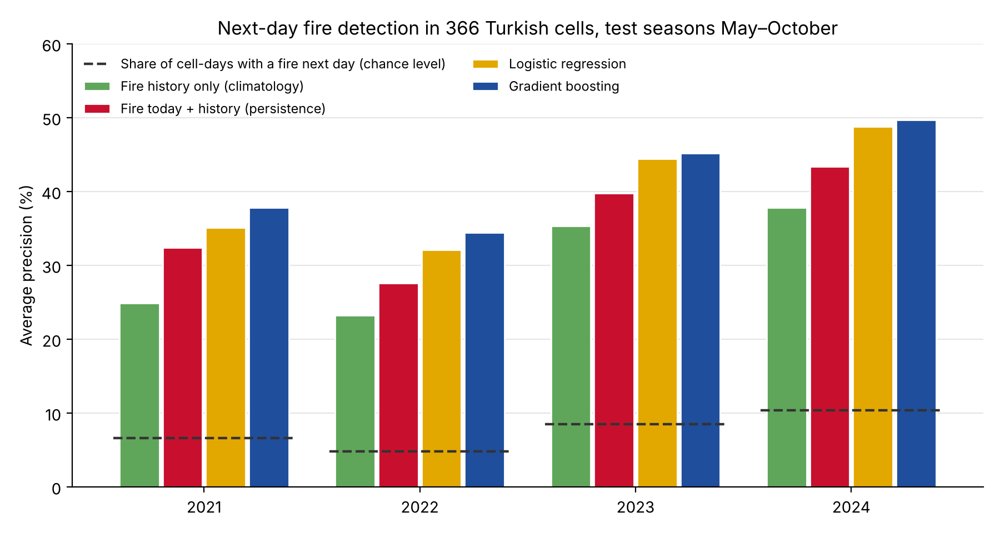

Experiment · Earth observation · Türkiye
Which Turkish forest cells will burn tomorrow? Today's fires and weather cut false alarms by 31%
OrmanGözcü: a next-day fire-risk benchmark for Türkiye built from NASA satellite detections and ERA5 weather
By Muzammal Hussain · 14 November 2026 · Research update
Fire lookouts in Turkish forests watch for the first smoke from their towers. I wanted to ask the satellite version of their question: given today's fire detections and today's weather, which parts of Türkiye are most likely to show a fire tomorrow, and how many false alarms does a warning list cost? OrmanGözcü ("forest lookout") splits the country into half-degree cells, about 55 km across, and scores every cell every day of the fire season.
Key findings
- Weather and today's fires beat fire history: gradient boosting reached 0.43 average precision on 2021-2024, against 0.30 for each cell's past fire rate and 0.37 for "it burned today". Chance level was 0.08.
- Fewer false alarms at the same catch rate: with a threshold set on 2020, it caught 58% of next-day fire cells, the same as fire history, with 35 false alarms a day instead of 51.
- It held in every test year, including the extreme 2021 season, and models trained without a region did almost as well on it as models trained with it.
- About 12 fire cells a day were still missed out of roughly 28, so this is a ranking aid, not a warning system.
Setup
Fires come from NASA FIRMS: VIIRS S-NPP 375 m detections, standard processing, May to October 2016-2024, kept only inside the Türkiye border, without low-confidence and non-vegetation detections. A cell-day is positive if the cell has at least one detection the next day. I scored the 366 cells that had at least three fire days in 2016-2019.
Weather is ERA5 reanalysis through the Open-Meteo archive: daily maximum temperature, rain, maximum wind and evapotranspiration, plus rain over the last 7 and 30 days and days since it last rained. The fire features are today's detections, the last 7 days in the cell and its eight neighbours, and the cell's historical fire rate for that month.
Training used 2016-2019, calibration and threshold choice 2020, and testing 2021-2024: 267,912 cell-days, 7.6% of them positive. Four models were compared: the cell's historical fire rate (climatology), fire today (persistence), logistic regression and gradient boosting over five seeds. Every model's scores were turned into probabilities with isotonic regression on 2020.

Ranking tomorrow's fire cells
| Model | Average precision | ROC AUC | In each day's top 10% | Calibration error |
|---|---|---|---|---|
| Fire history only | 0.301 | 0.811 | 38.3% | 0.022 |
| Fire today + history | 0.366 | 0.834 | 41.4% | 0.016 |
| Logistic regression | 0.412 | 0.843 | 44.0% | 0.010 |
| Gradient boosting | 0.430 | 0.842 | 44.1% | 0.012 |
Test seasons 2021-2024. "In each day's top 10%" is the share of next-day fire cells found among each day's 37 highest-risk cells. Gradient boosting varied by 0.001 across seeds.
ROC AUC barely separates the models. The differences are at the top of the list, which is the part a warning list is read from. Gradient boosting led in every year, by 5 to 7 points of average precision over fire-today persistence. All four models did better in 2023 and 2024, when fires were more common, and worst in 2022, when only 4.8% of cell-days were positive.
The cost of a warning list
| Model | Fire cells caught | Alarms that were right | False alarms a day | Missed fire cells a day |
|---|---|---|---|---|
| Fire history only | 57.9% | 24.0% | 50.8 | 11.7 |
| Fire today + history | 58.6% | 28.7% | 40.4 | 11.5 |
| Logistic regression | 55.0% | 33.6% | 30.2 | 12.5 |
| Gradient boosting | 58.4% | 31.7% | 34.9 | 11.5 |
Each model's threshold was set on 2020 to catch 60% of fire cells and then left unchanged for 2021-2024. All four stayed between 55% and 59%, so a threshold chosen on one season carried over reasonably well.
Does it travel across the country?
I split Türkiye into three longitude bands (west of 30°E, 30-36°E, east of 36°E), trained on two and tested on the third. Gradient boosting lost almost nothing: 0.320 against 0.326 in the centre, 0.504 against 0.515 in the east and 0.356 against 0.357 in the west, compared with a model that had seen all three. The largest drop was logistic regression in the east, 2.7 points. I expected a bigger penalty. The east was the easiest band for every model, and I have not checked how much of that comes from agricultural burning rather than forest fires.
What this means
A simple daily ranking built from open data already does better than "where it burned before" or "where it is burning now", and its probabilities are well calibrated. But it still misses about 40% of next-day fire cells and raises about two false alarms for every correct one. It is a way to rank where to look, not a warning system. The next version will add land cover, so forest cells can be separated from cropland, and humidity.
About the name
Orman gözcüsü is the Turkish term for a forest fire lookout, the person in the tower who watches the hills through the summer. OrmanGözcü tries to help with the same job from orbit.
Limitations
A satellite detection is not a fire on the ground: small, short or cloud-covered fires are missed, and agricultural burning is counted. The satellite passes about twice a day. Weather is one ERA5 point per one-degree block, so valleys and coastal winds are not resolved, and humidity, fuel moisture and land cover are not used yet. Only cells that burned in 2016-2019 are scored. The regions are simple longitude bands, not ecological zones. This is a research benchmark, not an operational system.
Data: NASA FIRMS VIIRS 375 m active fire product (Schroeder et al., 2014, Remote Sensing of Environment 143, 85-96); ERA5 reanalysis (Hersbach et al., 2020, Quarterly Journal of the Royal Meteorological Society 146, 1999-2049) via the Open-Meteo historical weather API; Türkiye border from Natural Earth (public domain).